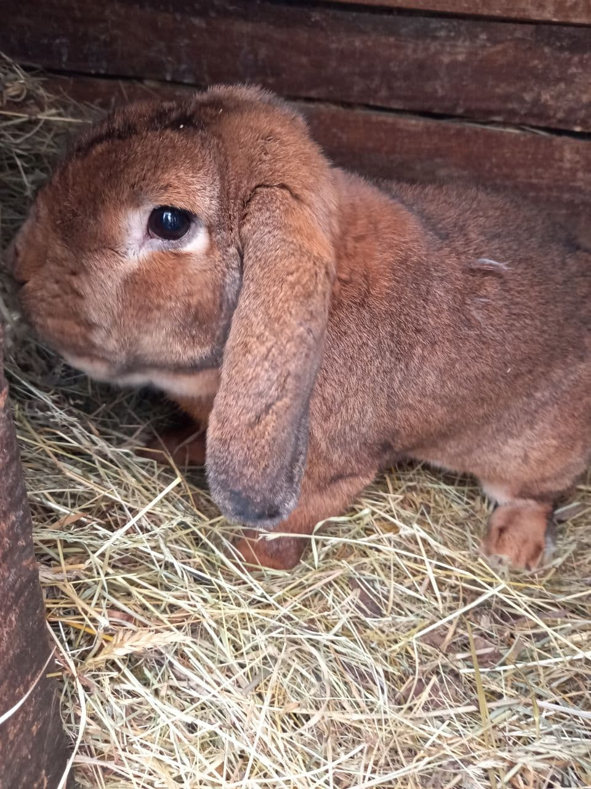

У меня есть четырехногий друг. Это мой песик, которого зовут Тимоха. Он очень красивый и добрый пёсик, любит играть со мной. Еге любимая игра- догонялки. Когда я прячусь в высокой траве, он меня ищет. Тимоха появился в нашем доме по инициативе папы почти 7 года назад и сразу стал любимцем семьи! Он готова с нами прыгать, играть, бежать, ловить мяч … особенно она любит, когда ей чешут пузико. ИНТЕРЕСНЫЙ ФАКТ : Тимошка очень боится грозы. Он заходит в дом и становится беззащитным щенком и никакими уговорами его не вытащить!
Кролик – удивительное животное, он очень умный и забавный. Моего любимца зовут Фролик. Он и в самом деле немного капризный и любит, чтобы все было так, как он хочет. Например, если он не хочет подходить, когда мы его зовем, то он прикидывается глухим и не оборачивается даже на наши голоса. Зато если ему хочется на ручки, он будет вспрыгивать на колени, пока ты ему не позволишь там остаться, даже если тебе некогда и ты уже десять раз его скинул с колен.
